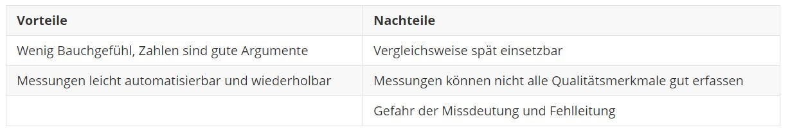

class: center, middle # Software Architekturen Pia Schreiner --- class: middle ## Agenda 1. Motivation und Ziele 2. Was ist eine Softwarearchitektur? 3. Bewertung von Software Architekturen 4. Entwurf einer Software 5. Herangehensweise an Architektur und Design ??? #### Motivation und Ziele 1. Warum sollten wir eine Software Architektur modellieren? 2. Was wollen wir mit einer Software Architektur erreichen? #### Was ist eine Softwarearchitektur? 1. Beschreibung des Begriffs 2. Verschiedene Sichten eine Architektur zu betrachten #### Bewertung von Softwarearchitekturen 1. Warum ist es sinnvoll Software Architekturen zu bewerten? 2. Wir gehen wir dabei vor? 3. Welche Methoden gibt es dabei? #### Entwurf einer Software 1. Wie komme ich zu einer Softwarearchitektur? 2. Wie sieht die Entwurfsphase aus? - Was ist ein Architekturentwurf? - Was ist ein Detailentwurf? #### Herangehensweise an Architektur und Design 1. Alles läuft mit Mustern ab 2. Was sind Entwurfsmuster? 3. Was sind Architekturmuster? 4. Zeigen von Beispielen für Architekturmuster --- class: middle ## Motivation ### Probleme - Grundsätzlich besitzen alle Softwaresysteme eine Architektur - Mehr vernetzte Produkte → mehr Komplextität/höherer Umfang - Auch organisatorische Einflussfaktoren müssen berücksichtigt werden - Bereits mittelgroße Softwaresysteme verfügen oftmals über große Strukturen ### Gründe - Beherrschen der Komplexität - Entwicklungs- und Prozessverbesserung erreichen - Kommunikations- und Disskusionsgrundlage schaffen ??? - Alle System besitzten Architektur → Wenn nicht erstellt dann oft sehr chaotisch - Durch die steigende Zahl vernetzter Produkte entsteht mehr Komplexität und Umfang --- class: middle ## Ziele - Effiziente Softwareentwicklung ist möglich - Performance kann gezielt gesteigert werden - Zeit Einsparung kann realisiert werden - Software-Budget kann optimieren werden - Gezielte Minimierung von Risiken - Kompakte Software in Umfang und Funktion designen - Wertvolles Wissen zu Software im Unternehmen erhalten und bewahren --- class: middle ## Was ist eine Software Architektur - Beschreibung aller Komponenten eines Systems - Verbindungen zwischen den Komponenten ### Aspekte - Beschreibung aller Elemente aus denen das System besteht - Interaktion zwischen den Elementen - Entwurfsmuster, welche durch die Softwarekomposition leiten - Geltende Bedingungen für die Entwurfsmuster ??? - Es geht weniger um den detaillierten Entwurf sondern mehr um Zusammenhänge - Aspekte die in einer guten Softwarearchitektur berücksichtigt werden sollten --- class: middle ## Architektursichten - Es gibt verschiedene Blickwinkel um eine Software zu betrachten - Sorgt für mehr Transparenz - Dient der Komplexitätsbewältigung im Rahmen von Anforderungen, Struktur und Umsetzung - Entkopplung verschiedener System-Aspekte ### Modelle: - 4+1 Sichtenmodell von Kruchten - Vier Arten von Sichten von Starke ??? - Verschiedene Blickwinkel um eine Software in Gänze begreifen zu können - Sicht aus unterschiedlichen Rollen welche unterschiedliche Expertise besitzen - Durch die Entkopplung können System-Aspekte einzeln und dadurch genauer betrachtet werden --- class: middle ## 4+1 Sichtenmodell nach Kruchten <img src="img/4+1Model.png" width="100%"> *Quelle: [4]* ??? #### Logische Sicht - Die logische Schicht beschäftigt sich mit der Funktionalität des Systems für den Endnutzer. - Diese Funktionalität wird mit Hilfe von verschiedenen UML-Diagrammen dargestellt. - Die logische Sicht betrachtet die Phase der Anforderungsanalyse - Artefakte: - Klassendiagramm - Verbundstrukturdiagramm #### Entwicklungssicht - Die Entwicklungssicht beschreibt das System vom Standpunkt eines Entwicklers - Dabei beschäftigt sich diese mit dem Softwaremanagement - Fokus auf die Modularisierung in Subsysteme - Artefakte - Komponentendiagramm - Paketdiagramm #### Prozesssicht - Die Prozesssicht beschreibt das System vom Standpunkt des Systemintegrators - Dabei beschäftigt sich diese mit den dynamischen Aspekten des Systems - Der Fokus liegt dabei auf der Beschreibung aller Prozesse sowie die Kommunikation derer hinsichtlich des Laufzeitverhaltens. - Artefakte: - Aktivitätsdiagramm - Sequenzdiagramm - Kommunikationsdiagramm #### Physische Sicht - Beschreibt das System vom Standpunkt eines Systemarchitekten - Dabei geht es um die Abbildung der Software auf die Hardware sowie die Verteilungsaspekte - Artefakte: Netzwerktopologie #### Szenario Sicht - Die Szenario Sicht stellt eine Beschreibung wichtiger Anwendungsfälle und Anwendungsszenarien dar. - Diese bieten eine Darstellung von Abläufen zwischen Komponenten und Prozessen. - Dies bietet die Möglichkeit Architekturelemente zu identifizieren und zu veranschaulichen. - Artefakte: - Use Case Diagramm - User Stories --- class: middle, center ## Vier Arten von Sichten von Starke .center[<img src="img/ArchitekturSichtenStarke.jpg" width="50%">] *Quelle: [5]* ??? #### Kontextabgrenzung - Betrachtung der Einbettung des Systems in seine Umgebung - System als Blackbox aus Vogelperspektive - Im Detail: - Beschreibung der Namen und Funktion aller Nachbarsysteme - Die Art der mit den Nachbarsystemen ausgetauschten Datenstrukturen - Metainformationen der Schnittstellen oder übertragenen Daten #### Bausteinsicht - Interne Aufbau des Systems in einer statischen Struktur - Beleuchtung des Systems, der Subsysteme und Komponenten - Beschreibung das Zusammenwirken der einzelnen Bausteine (Schnittstellen) - Artefakte - Komponentendiagramm - Paketdiagramm #### Laufzeitsicht - Im Gegensatz zur Bausteinsicht: dynamische Struktur der Bausteine des Systems die zur Laufzeit existieren - Beschreibt außerdem Zusammenwirken der Bausteine - Artefakte: - Aktivitätsdiagramm - Sequenzdiagramm - Kommunikationsdiagramm #### Verteilungssicht (Infrastruktur) - Beschreibt technische Arbeitsumgebung - Beschreibung von Hardwarekomponenten - Im Detail: Rechner, Prozessoren, Speicher - Artefakte: Netzwerktopologie, Deploymentdiagramm --- class: middle ## Bewertung von Software Architekturen ### Warum? - Überprüfung ob diese ein geeignetes Lösungskonzept bietet - Erkennung potentieller Risiken - Beurteilung der Realisierung der Qualitätsanforderungen - Oftmals Erarbeitung von Möglichkeiten zur Wiederverwendung von Komponenten ### Wie? - Qualitativ - Quantitativ ??? - Wir wissen nun warum wir eine Software Architektur modellieren und wie diese aussieht. - Nun schauen wir uns an wie wir entscheiden ob eine SWA gut ist - Validieren der Software Architektur -> Geeignetes Lösungskonzept? - Haben wir die Qualitätsanforderungen erreicht die wir als Ziel gesetzt haben - Qualitativ → mehr auf Erfahrung und Argumenten basiert - Quantitativ → auf der Messung von Zahlen basiert - Ich erläutere diese gleich im Detail --- class: middle ## Qualitätskriterien nach ISO 25010 <img src="img/Qualitätsmerkmale.png" width="100%"> *Quelle: [6]* ??? - Dafür schauen wir uns die Qualitätskriterien der ISO 25010 an - Haben wir schon im Beitrag Software Qualität gesehen - Nur kleine Erinnerung - Kurze Erläuterung der Kernkriterien --- class: middle ## Qualitätsbaum - Ausgangspunkt für die Bewertung einer Software Architektur - Beschreiung der zu erreichenden Qualitätsziele - Hierarchische Struktur - Enthält für die spezifische Software relevanten Qualitätsmerkmale ??? - Je nach Software ist es möglich, einzelne Kernkriterien ganz wegzulassen - Es müssen nur für die Software relevante Qualitätskriterien vorkommen --- class: middle ## Beispiel Qualitätsbaum <img src="img/BeispielQualitätsbaum.jpg" width="100%"> *Quelle: [10]* ??? - Man definiert die Kernkriterien und Unterkriterien - Aus diesen kann man Szenarios abbilden → Szenarios braucht man zB für eine qualitative Bewertung --- class: middle ## Qualitative Bewertung - Meistens in Form von Workshops / Architektur Reviews - Bewertung anhand von Durchsprache von Lösungsansetzen, Erfahrung und Argumenten - Methoden: - Durchführen Szenario basierter Verfahren - Ausfüllen von vorgefertigten Checklisten ### Szenario basierte Verfahren - Szenario → Beispielhafte Verwendung des zu betrachtenden Systems - Fokus muss auf einem Qualitätsmerkmal aus dem Qualitätsbaum liegen - Das Szenario wird durchgeführt, bewertet und dokumentiert - Es gibt viele dieser Methoden, die bekannteste ist ATAM (architecture tradeoff analysis method) ??? - Erfahrung und Argumente von Workshopbeteiligten → Restrisiko bleibt - ist immer subjektiv nicht auf Zahlen basiert - Beispielhafte Verwendung → Kann Anwendungsfall oder Auftritt eines Fehler sein - es gibt sehr viele dieser Methoden → Das würde hier den Rahmen sprengen - ATAM bietet zB eine gute Identifikation von Risiken und Nichtrisiken hinsichtlich der Qualitätsmerkmale --- class: middle ## Vorteile / Nachteile *Quelle: [6]* --- class: middle ## Quantitative Bewertung - Setzt auf Zahlen und Fakten - Bewertung anhand von Analyse von Quelltext und Struktur der Software - Toolgestützt - Methoden: - Statische Codeanalyse - Dynamische Codeanalyse - Strukturanalyse ??? - Im Gegensatz zu qualitativer Bewertung Bewertung anhand von Zahlen und Fakten - Wird toolgestützt mit Tools für die Code Analyse durchgeführt (zB SonarCube was bereits vorgestellt wurde) - Statische Codeanalyse → Metrikauswertungen - Dynamische Codeanalyse → Bewertung auf Performanz, Skalierung und Zuverlässigkeit - Strukturanalyse → Visualisierung von Codegliederungen und Abhängigkeiten → - Bei möglicher Abweichung von er Architekturidee kann Architektur und Codeseite überarbeitet werden --- class: middle ## Vorteile / Nachteile  *Quelle: [6]* --- class: middle ## Entwurf einer Software .center[<img src="img/PhasenSoftwareentwicklung.png" width="75%">] *Quelle: [14]* ??? - Softwareentwicklungs Prozess gliedert sich in 4 Phasen (wie ihr alle wisst) 1. Anforderungsanalyse (Sammeln von Funktionalen und nicht funktionalen Anforderungen → Lasten/Pflichtenheft) 2. Entwurf (Phase wo die Softwarearchitektur entsteht, gliedert sich in einen Grobentwurf und einen Feinentwurf) 3. Implementierung 4. Integration --- class: middle ## Grobentwurf / Architekturentwurf - Beschreibt die Gesamtstruktur auf hoher Abstraktionsebene - Identifikation von Komponenten und der Interaktion untereinander - Festlegen von Randbedingungen ### Aufgaben - Aufgabe analysieren - Architektur modellieren und dokumentieren - Lösungskonzept prüfen ### Artefakte - Architekturentwurf - Subsystem Spezifikation - Schnittstellenspezifikation ??? #### Randbedingungen Vorgabe von Hardware, Bestriebssystem oder auch Programmiersprache #### Aufgabe analysieren - Anforderungen verstehen - Vorhandene bzw. beschaffbare Technologien und Mittel analysieren #### Architektur modellieren und dokumentieren - Grundlegende Systemarchitektur festlegen - Modularisierung - Gliederung der zu erstellenden Software in Komponenten - Abgrenzung der Module - Festlegung von Verantwortlichkeiten - Nebenläufige Lösungen in Prozesse gliedern - Analyse der zeitlich verzahnten Ausführung von Aktivitäten - Festlegung der Prozesse und Zuordnung zu Modulen - Art der Ausführung der Prozesse regeln (Priorität, Reihenfolge, Unterbrechbarkeit) - Zusammenarbeit festlegen - Kommunikationsbedürfnisse analysieren - Kommunikationsverfahren festlegen - Für jedes Bedürfnisse konkrete Verfahren wählen und Schnittstellen definieren - Wer kommuniziert was mit wem? / Wie wird kommuniziert? --- class: middle ## Feinentwurf / Detailentwurf - Beschreibt die Detailstruktur des Systems - Beschreibt die einzelnen Komponenten, so dass die implementiert werden können - Beschreibt Datenstrukturen und Algorithmen ### Aufgaben - Abbildung der Module und Prozesse - Erstellung von Coderahmen und Implementierungsskizzen für alle Module und Prozesse - Detaillierte Ausarbeitung aller Aspektkonzepte ### Artefakte - Architekturentwurf - Subsystem Spezifikation - Schnittstellenspezifikation ??? #### Aufgaben - Abbildung der Module und Prozesse auf die verfügbaren Konstrukte der verwendeten Programmiersprachen --- class: middle ## Herangehensweise an Architektur und Design - Im Rahmen der Softwareentwicklung werden für alle Schritte verschiedene Arten von Mustern eingesetzt - Für den Softwareentwurf unterscheidet man je nach Granularität - Architekturmuster - Entwurfsmuster ??? #### Musterarten - Muster für die Analyse - Muster für den Entwurf - Muster für die Implementierung - Muster für das Testen von Software #### Architekturmuster - grobgranular - bieten eine Sicht auf die gesamte Anwendung #### Entwurfsmuster - feingranular - Fokussieren sich auf die Lösung eines lokalen Problems --- class: middle ## Entwurfsmuster .center[] ??? #### Strukturmuster - Erzeugungsmuster befassen sich mit der Erzeugung von Objekten. - Sie entkoppeln die Objektkonstruktion von der Objektrepräsentation. #### Verhaltensmuster - Verhaltensmuster beschreibt wie Klassen oder Objekte miteinander kommunizieren - Stellen die Verteilung von Verantwortlichkeiten dar #### Erzeugungsmuster - Erzeugungsmuster befassen sich mit der Erzeugung von Objekten. - Sie entkoppeln die Objektkonstruktion von der Objektrepräsentation. --- class: middle ## Architekturmuster - Beschreiben die Gesamtarchitektur des Systems - Spezifikation der Zusammenarbeit der Subsysteme .left[<img src="img/Architekturmuster.svg" width="110%">] ??? #### Chaos zu Struktur - Architekturmuster dieser Kategorie bieten eine Organisation der Vielzahl der Komponenten und Objekte eines Softwaresystems - Aufteilung der Funktionalität des Gesamtsystems in kooperierende Subsysteme - Das bekannteste Muster ist die Schichtenarchitektur #### Verteilte Systeme - Architekturmuster in dieser Kategorie unterstützen die Verwendung verteilter Ressourcen und Dienste in Netzwerken - Für die Verteilung muss es in Subsysteme strukturiert sein - Die tradionelle Architektur in dieser Kategorie ist die Client-Server Architektur #### Adaptive Systeme - Architekturmuster in dieser Kategorie sind besonders anpassungsfähig und erweiterungsfähig zur Laufzeit #### Interaktive Systeme - Muster in dieser Kategorie bieten eine Strukturierungsmöglichkeit für Interaktionen von Mensch und Compute --- class: middle ## Schichtenarchitektur ### Grundidee - Subsysteme werden verschiedenen horizontalen Schichten zugeordnet - Komponenten innerhalb eines Subsystems können beliebig aufeinander zugreifen - Zwischen Schichten gelten Zugriffsregeln - Die interne Struktur einer Schicht ist nach außen nicht sichtbar ### Anwendungsbereiche - Strukturierung großer Systeme ??? - Nur als kurze Erinnerung --- class: middle ### Schichten - Besteht meistens aus drei Schichten 1. Datenhaltungsschicht 2. Logikschicht 3. Darstellungsschicht - Jede Schicht darf nur mit der Schicht unter ihr kommunizieren ### Nachteile - Abhängigkeit von der Datenzugriffsschicht - Wenig Flexibilität ??? #### Datenhaltungsschicht - Speicherung der Anwendungsdaten #### Logikschicht - Stellt das Herzstück der Anwendung dar #### Darstellungsschicht - Zuständig dafür die Daten anzuzeigen und mit dem Benutzer zu interagieren #### Nachteile - alles hängt von der Datenzugriffsschicht ab, dies ist in Zeiten von agiler Entwicklung und vor allem in Kombination mit Domain Driven Design wenig praktikabel - Test Setup aufwändig und die Testausführung langsam - da wenn die Business Logik Schicht direkt die Datenzugriffsschicht und die diese direkt die Datenbank aufruft kann nicht einmal die Business-Logik unabhängig von der Datenbank getestet werden. - wenig Flexibilität - Durch Abhängigkeiten muss die Logik Schicht mit angepasst werden, wenn sich z.B der Datenzugriff ändert --- class: middle ## Von Schichten zu Ringen - Es gibt Weiterentwicklungsansätze für das Schichtenmodell - Ports and Adapters (hexagonale Architektur) - Onion Architektur - Clean Architektur ### Neuer Ansatz - Entkopplung der Abhängigkeiten durch das Prinzip der Dependency Inversion - Entwickeln und Testen einer Anwendung unabhängig von Frameworks, DBs und sonstiger Infrastruktur --- class: middle ## Ziele der Ansätze - Unabhängig von Frameworks - Testbar - Unabhängig von der Benutzeroberfläche - Unabhängig von der Datenbank ??? #### Unabhängig von Frameworks - Die Architektur hängt nicht von der Existenz einer Bibliothek funktionsreicher Software ab. #### Testbar - Geschäftsregeln sind nicht außenstehende Infastruktur gebunden und lassen sich ohne diese testen #### Unabhängig von der Benutzeroberfläche - Die Benutzeroberfläche kann leicht geändert werden, ohne den Rest des Systems zu ändern - bsp: Web Benutzeroberfläche durch Konsolenoberfläche tauschen #### Unabhängig von der Datenbank - Geschäftsregeln sind nicht an Datenbank gebunden - Einfacher Austausch möglich --- class: middle ## Hexagonale Architektur (Ports and adapters) .center[<img src="img/Hexagon-Schichten.JPG" width="100%">] *Quelle: [18]* ??? - Mittlerer Kern aus Fachlogik, - Anwendungsschicht wird darum gelegt welche Use Cases und Komposition enthält - Außenherum eine Ports Schicht die eine Verbindung zu außenstehenden Systemen darstellt --- class: middle .center[] *Quelle: [18]* ??? #### Allgemein - Auf der Ports Schicht existieren Adapter (Klassische Adapter nach dem Adapter Pattern) - stellen die Verbindung dar von Anwendung zu außenliegenden Systemen wie Datenbank - stellen die Verbindung dar von außen zum System in Form von View Controllern oder auch REST Controllern - jeder Adapter sollte nur von einem Port abhängen - man unterscheidet dabei primäre von sekundären Adaptern #### Primäre Adapter - treibende Adapter, werden aktiv angesprochen, eingesetzt im User interface - Bsp: REST-Controller #### Sekundäre Adapter - angetriebene Adapter, werden von Applikation angesprochen um Subsysteme zu triggern, eingesetzt in Infrastruktur - ORM Adapter --> Datenbank - Email Adapter --> Mailing Server - Search Adapter --> Search Engine --- class: middle ### Einsatzgebiet - Man besitzt eine Fachlogik (Domain) - Viele Umsysteme oder APIs - Verschiedene fachliche Sichten ### Vorteile / Nachteile .center[] *Quelle: [18]* ??? #### Vorteile - Klare Einteilung der Komponenten - Objekte beispielsweise für die Darstellung gebraucht werden existieren lediglich im entsprechenden GUI-Adapter - Einzelne Schichten lassen sich besser testen - Anpassung/Austauschbarkeit der Adapter - Bausteinprinzip - So wäre es denkbar den Postgres-Datenbank-Adapter durch einen Android-SQLite-Adapter und den HTML-UI-Adapter durch einen nativen Android-UI-Adapter zu ersetzen. - Mit dem Austausch von lediglich zwei Komponenten wandelt man die Anwendung zu einer nativen Android-Anwendung, ohne dass die eigentliche Geschäftslogik geändert werden muss. - Einfache Erweiterbarkeit und Skalierbarkeit - Durch das konsequente Entwickeln gegen Ports lässt sich die grundlegende Adapterstruktur leicht ändern. - Keine Festlegung auf eine Architekturform innerhalb der einzelnen Komponenten - Innerhalb der Hexagonalen Architektur werden keinerlei Annahmen über den Entwurf der einzelnen Adapter getroffen. - Nutzung anderer Architekturmuster möglich #### Nachteile - höhere Komplexität - schwierigere Orientierung / Einarbeitungszeit da einzelne Komponenten möglicherweise über mehrere Projekte und Subprojekte verteilt - Orchestrierung notwendig um die einzelnen Teile der Anwendung zusammenzufügen - Lohnt sich nur für größere Projekte auf Grund des Aufwandes --- class: middle ## Onion Architecture .center[<img src="img/Zwiebelarchitektur.jpg" width="90%">] *Quelle: [19]* ??? #### Allgemein - Fachlichkeit ebenfalls im Zentrum (wie bei hexagonal) - Besteht aus einer je nach Definition unterschiedlicher Anzahl an Ringen, welche jeweils bestimmte Aspekte der Applikationsarchitektur beinhalten - Abhängigkeit nur von äußeren Ringen zu inneren Ringen (Dependency Inversion) - Basiert auf den Regeln des Domain-Driven Design - Sinnvoll wenn die Applikation eine gewisse Größe und Komplexität aufweist #### Ringe - Zahl der Ringe im Applikationskern kann stark variieren, aber das Domänenmodell ist immer der innerste Ring - 1 Ring ist typischerweise der Ring mit Schnittstellen (Domain Services) - Äußere Ringe -> Benutzerschnittstelle, Infrastruktur und Tests - Äußere Ringe reserviert für Dinge die sich oft ändern - Der Ansatz sichert ab, dass der Applikationskern nicht geändert werden muss, wenn Benutzerschnittstelle, Datenzugriff, Webservices etc. sich ändern --- class: middle ### Vorteile / Nachteile .center[] *Quelle: [19]* ??? #### Vorteile - Flexibilität - klare Trennung der äußeren Schicht von der Anwendungslogik - problemloses Austauschen - klare Trennung zwischen fachlichem Code und Infrastruktur - Geschäftslogik ist im Vergleich zur sich schnell verändernden Infrastrukturtechnologien und Frameworks sehr langlebig - daher das Fundament für eine nachhaltige Software - kann schnell getestet werden da der Anwendungskern keine Abhängigkeiten hat #### Nachteile - Nicht einfach zu verstehen - hohe Lernkurve - Aufteilung der Verantwortlichkeiten zwischen den Ebenen nicht einfach - wird oft falsch gemacht - Viele Schnittstellen - kann die Navigation im Projekt deutlich erschweren --- class: middle ## Clean Architecture .center[] *Quelle: [21]* ??? #### Allgemein - Darstellung in konzentrischen Ringen - Abhängigkeit nur von innen nach außen - Die ersten zwei Ringe stellen die Business Logik dar #### Ringe - Erster Ring = Entities - anwendungsneutral - wird durch das geschäftliche Umfeld des Unternehmens bestimmt - Diese Ebene enthält Geschäftslogik, die allen Anwendungen gemeinsam ist. Bei einer separaten Anwendung beziehen sich diese Ebenen auf die grundlegendsten Geschäftsobjekte. - Zweiter Ring = Use Cases - konkrete Umsetzung zugehöriger Use Cases in der aktuellen Anwendung - Anwendungslogik, die den Datenfluss von der vorherigen Ebene steuert.´ - Dritter Ring = Schnittstellenebene - Der dritte Ring enthält Adapter die zwischen den für Use Cases und Entities geeigneten Datenformaten und von den Frameworks und Treibern vom äußeren Ding benötigten Daten konvertieren - Diese Ebene enthält Adapter zwischen Anwendungsfällen und der Außenwelt. Es konvertiert Daten in ein Format, das für externe Ebenen wie das Web oder Datenbanken geeignet ist. Außerdem werden externe Daten in ein Format umgewandelt, das für interne Ebenen geeignet ist. - Vierter Ring = Frameworks und Treiber - Diese externe Ebene enthält die Benutzeroberfläche, Frameworks, Tools, Datenbanken usw. --- class: middle ### Anwendungsbereiche - Wenn die umzusetzende Fachlichkeit komplex ist - Wenn die Fachlichkeit über längeren Zeitraum gewartet werden muss - Für einfache Anwendungen lohnt sich der Aufwand eher nicht ### Vorteile / Nachteile .center[<img src="img/CleanVorteileNachteile.JPG" width="100%">] *Quelle: [21]* ??? #### Vorteile - Anwendungsfälle sind an einem Ort zusammengefasst - sehr gut sichtbar und leichter zu verstehen sind - Geschäftsregeln sind nicht überall verteilt - Leichteres Debuggen und Ändern des Codes - Durch die Abhängigkeitsregel ist Testen sehr viel einfacher - Flexibel und portabel - Da Anwendungsfälle vollständig von jeder Benutzeroberfläche oder Infrastruktur entkoppelt sind, ist das Austauschen von beispielsweise Datenbank sehr einfach - auch eine Portierung auf eine neue Plattform kann ohne viel Aufwand umgesetzt werden #### Nachteile - sehr viel Aufwand - hohe Lernkurve - kostet Zeit - Aufblähen des Projektes - auf Grund des Einsatzes vieler separater Klassen für alle Präsentatoren, Entitäten etc #### Abschluss - Wie man sieht sind sich diese drei Ansätze sehr ähnlich und haben auch ähnliche Vor und Nachteile --- class: center, middle # Fragen? --- ## Quellen [1] [Software Architekturen: Grundlagen - Theorie - Praxis](https://www.springer.com/de/book/9783827419330) [2] [Software Architektur kompakt (Gernot Starke)](https://www.springer.com/de/book/9783827428349#otherversion=9783827428356) [3] [Effiziente Softwarearchitekturen (Gernot Starke)](https://www.hanser-fachbuch.de/buch/Effektive+Softwarearchitekturen/9783446452077) [4] [Documenting Software Architecture](https://herbertograca.com/2019/08/12/documenting-software-architecture/) [5] [Unterschiedliche Sichten auf Architekturen](https://entwickler.de/online/unterschiedliche-sichten-auf-architekturen-116073.html) [6] [Was ist eigentlich Architekturbewertung](https://www.informatik-aktuell.de/entwicklung/methoden/was-ist-eigentlich-architekturbewertung.html) [7] [Architektur Reviews](https://www.embarc.de/themen/architekturreviews/) [8] [Auswahl von Bewertungsmethoden für Softwarearchitekturen](https://www.softec.wiwi.uni-due.de/uploads/tx_itochairt3/publications/ICBReport14_04.pdf) [9] [Vergleich von Qualitätsbewertungsmethoden für IT-Architekturen](http://bauhaus.cs.uni-magdeburg.de:8080/miscms.nsf/FEA8C8150500AA14C1257449004F79A9/739B0C874E72E513C1257651002C9086/$FILE/Studienarbeit%20Frank%20Eichler.pdf) [10] [Qualitätsanforderungen konkret formulieren](https://jaxenter.de/stakeholder-qualitaetsanforderungen-konkret-formulieren-86582) [11] [Spezifikation und Entwurf von Software (Martin Glinz)](https://files.ifi.uzh.ch/rerg/amadeus/teaching/courses/spezifikation_und_entwurf_ws0506/kapitel_17.pdf) [12] [Softwarearchitektur & Entwurf (Wolfgang Schramm)](http://services.informatik.hs-mannheim.de/~schramm/see/files/Kapitel04.pdf) [13] [Lehrbuch der Softwaretechnik: Entwurf, Implem...(Helmut Balzert)](https://www.springer.com/de/book/9783827417060) [14] [Vorgehensweise zur Erstellung einer IT-Architektur](https://www.axxessio.com/de/blog-de/axx42-erstellung-it-architektur) [15] [Design Pattern](https://www.philipphauer.de/study/se/design-pattern.php) [16] [Architektur und Entwurfsmuster](https://www.w3l.de/de/fileadmin/user_upload/Architektur_und_Entwurfsmuster_2012.pdf) [17] [DDD Architekturen im Vergleich](https://www.maibornwolff.de/blog/ddd-architekturen-im-vergleich) [18] [Hexagonale Architektur](https://www.doag.org/formes/pubfiles/11046614/2019-NN-Christian_Iwanzik-Hexagonale_Architektur_in_Microservices-Praesentation.pdf) [19] [Zwiebelarchitektur und Ihre Vorteile](https://jaxenter.de/die-zwiebelarchitektur-und-ihre-vorzuege-19474) [20] [Von Schichten zu Ringen - Hexagonale Architekturen erklärt](https://www.maibornwolff.de/blog/von-schichten-zu-ringen-hexagonale-architekturen-erklaert) [21] [Clean Architekture](https://www.4soft.de/blog/2019/clean-architecture/)